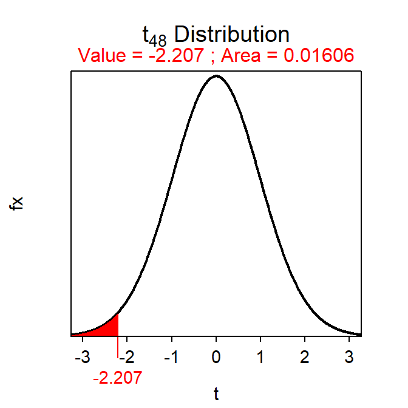

Module 20 Chi-Square Test
Situations where a categorical response variable is recorded would be summarized with a frequency or percentage table (see Modules 4 and 10). The appropriate test statistic in these situations is a chi-square rather than a t. The Chi-Square Test test statistic follows a chi-square distribution, which is introduced below. The rest of this module is dedicated to the general Chi-Square Test where the distribution of a categorical response variable is compared between two or more groups (or populations). The related goodness-of-fit test for a categorical response recorded for only one group (or population) is introduced in Module 21.
20.1 Chi-Square Distribution
A chi-square (χ2) distribution is generally right-skewed (Figure 20.1), with the exact shape dictated by the degrees-of-freedom (df); as the df increase the sharpness of the skew decreases (Figure 20.1). In its simplest form, the χ2 distribution arises as a sampling distribution for the χ2 test statistic,
\[ \chi^{2} = \sum_{cells}\frac{(Observed-Expected)^{2}}{Expected} \]
where “Observed” and “Expected” represent the observed and expected counts in the cells of frequency tables (see Module 4 and Module 10). Thus, the χ2 distribution arises from comparing frequencies in two tables.67
Figure 20.1: \(\chi^2\) distributions with varying degrees-of-freedom.
Unlike the normal and t distributions, the χ2 distribution always represents the two-tailed situation, although the “two tails” will appear as one tail on the right side of the distribution. The simplest explanation for this characteristic is that the “squaring” in the calculation of the χ2 test statistic results in what would be a “negative tail” being “folded over” onto what is the “positive tail.” Thus, all probability (i.e., area) calculations on a χ2 distribution represent the two-tailed alternative hypotheses.
Proportional areas on a χ2 distribution are computed with disrib(). The major differences with a χ2 distribution is that distrib="chisq" must be used in distrib() and the degrees-of-freedom must be given to df= (how to find the df will be discussed in subsequent sections). In addition, lower.tail=FALSE is always used when computing a p-value because the upper-tail probability represents the two-tailed alternative hypothesis inherent to all Chi-Square Tests. For example, the area right of χ2=6.456 on a χ2 distribution with 2 df is 0.0396 (Figure 20.2).
( distrib(6.456,distrib="chisq",df=2,lower.tail=FALSE) )Figure 20.2: Depiction of the area to the right of \(\chi^2=6.456\) on a \(\chi^2\) distribution with 2 df.
20.2 Chi-Square Test Specifics
Researchers commonly want to compare the distribution of individuals into the levels of a categorical variable among two or more groups (or populations). For example, researchers may want to determine if the distribution of failing students differs between males and females, if the distribution of kids playing sports differs between kids from high- or low-income families, if the distribution of four major plant species differs between two locations, or if the distribution of responses to a five-choice question differs between respondents from neighboring counties. All of these questions have a categorical response variable (fail or not, play sport or not, plant species, answer to five-choice question) compared among two or more groups (gender, income category, two locations, neighboring counties). The Chi-Square Test, the subject of this module, can be used for each of these situations.68
20.2.1 Hypotheses
The statistical hypotheses for a Chi-Square Test are “wordy.” To explore this, let’s first assume that a two-way frequency table (see Module 10) will summarize the data where the rows correspond to separate groups and the columns correspond to levels of the response variable. In this organization, the Chi-Square Test null hypothesis is that the row percentages are equal – i.e., “the percentage distribution of individuals into the levels of the response variable is the same for all groups.” The alternative hypothesis states that there is some difference among the row percentages – i.e., “the percentage distribution of individuals into the levels of the response variable is NOT the same for all groups.”
As one example (more are shown below), consider the following:
An association of Christmas tree growers in Indiana sponsored a survey of Indiana households to help improve the marketing of Christmas trees. Of the 261 rural households, 64 had a natural tree (as compared to an artificial tree). Of the 160 urban households, 89 had a natural tree. Use these results to determine, at the 10% level, if the distribution of households with a natural tree differed between rural and urban households.
The hypotheses for this situation are,
- H0: “the distrubution of households into the tree types is the same for urban and rural households”
- HA: “the distrubution of households into the tree types is NOT the same for urban and rural households”
20.2.2 Tables
As noted above, all two-way frequency tables used for a Chi-Square Test will be organized such that the response variable forms the columns and the groups to be compared form the rows. With this organization, the row-percentage table becomes the table of primary interest because it relates directly to the hypotheses described above. The question of a Chi-Square Test then becomes one of determining whether each row of the row-percentage table is equal, given sampling variability.
The observed raw data must be organized into a two-way frequency table as described in Module 10. For example, the Christmas tree data is summarized as in Table 20.1. The actual calculations for a Chi-Square Test are performed on this observed table. However, the hypothesis test, as described above, is best viewed as a method to determine if each row of the row-percentage table is statistically equivalent or not. Thus, the row-percentage table computed from the frequency table is useful when interpreting the results of a Chi-Square Test (Table 20.2).
| Natural | Artificial | Sum | |
|---|---|---|---|
| Urban | 89 | 172 | 261 |
| Rural | 64 | 96 | 160 |
| Sum | 153 | 268 | 421 |
| Natural | Artificial | Sum | |
|---|---|---|---|
| Urban | 34.1 | 65.9 | 100 |
| Rural | 40.0 | 60.0 | 100 |
| ALL | 36.3 | 63.7 | 100 |
The Chi-Square Test requires constructing a table of expected values that are derived from the null hypothesis. Specifically, the “expected” table contains the expected frequency of individuals in each level of the response variable for each group assuming that the distribution of responses does not differ among groups. These expected tables are computed from the margins of the observed table, but are best explained with an illustrative example.
In the Christmas tree example, the null hypothesis states that there is no difference in the distribution of households with a natural tree between the rural and urban areas. Thus, under this null hypothesis, one would expect the proportion (or percentage) of households with a natural tree to be the same in both groups. The proportion of households with a natural tree, regardless of location, is \(\frac{153}{421}\)=0.363. Thus, under the null hypothesis, the proportion of rural AND the proportion of urban households with a natural tree is 0.363. Because there is a different number of urban and rural households in the study, the actual NUMBER (rather than proportion) of households expected to have a natural tree will differ. The NUMBER of urban households expected to HAVE a natural tree is found by multiplying the number of urban households by the common proportion computed above – i.e., 261×0.363=94.743. The remaining urban households would be expected to NOT have a natural tree – i.e., 261-94.743=261×(1-0.363)=166.257. Similar calculations are made for the rural households (i.e., 160×0.363=58.080 expected to have a natural tree and 160×(1-0.363)=101.920 expected to NOT have a natural tree.
These expected frequencies are computed directly and easily from the marginal totals of the observed frequency table (Table 20.1). For example, substituting the fractional representation of the decimal proportions into the calculation of the expected number of urban households with a natural tree gives 261×\(\frac{153}{421}\)=\(\frac{261\times153}{421}\)=94.85369. A close examination of this formula and the marginal totals in Table 20.1 shows that this value is equal to the product of the corresponding row and column marginal totals in the observed table divided by the total number of individuals. The other expected values follow a similar pattern as follows,
- 261×\(\frac{268}{421}=\frac{261\times268}{421}\)=166.147 urban households to NOT have a natural tree.
- 160×\(\frac{153}{421}=\frac{160\times153}{421}\)=58.147 rural households to have a natural tree.
- 160×\(\frac{268}{421}=\frac{160\times268}{421}\)=101.853 rural households to NOT have a natural tree.
Thus, all expected values in a Chi-Square Test are calculated by multiplying the row and column totals of the frequency table and dividing by the total number of individuals. These expected values are summarized in a two-way table, called the expected frequencies table (Table 20.3)
| Natural | Artificial | Sum | |
|---|---|---|---|
| Urban | 94.853 | 166.147 | 261 |
| Rural | 58.147 | 101.853 | 160 |
| Sum | 153.000 | 268.000 | 421 |
20.2.3 Specifics
The Chi-Square Test is characterized by a categorical response variable recorded for two or more groups (or populations). The specifics of the Chi-Square Test are below.
- Null Hypothesis: “The distribution of individuals into the levels of the response variable is the same for all groups”
- Alternative Hypothesis: “The distribution of individuals into the levels of the response variable is NOT the same for all groups.”
- Statistic: Observed frequency table.
- Test Statistic: χ2=\(\sum_{cells}\frac{(Observed-Expected)^{2}}{Expected}\)
- df: (r-1)×(c-1) where r is number of rows and c is the number of columns
- Assumptions: Expected value for each category is ≥5.
- Use with: Categorical response, two or more groups (or populations).
A confidence region is not usually constructed for a Chi-Square Test because of the complexity of the statistics and parameter. Thus, Step 11 for a hypothesis test will not be computed for a Chi-Square Test.
20.3 Examples
20.3.1 Christmas Trees
Below are the 11-steps (Section 17.1) for a full hypothesis test for the Christmas tree example.
- α=0.10.
- H0: “distribution of households by type of tree is the same for urban and rural households” vs. HA: “distribution of households by type of tree is NOT the same for urban and rural households.”
- A Chi-Square Test is required because …
- a categorical response variable was recorded (type of tree) and
- two groups are being compared (urban and rural households).
- The data appear to be part of an observational study with no clear indication of randomization.
- The expected frequency in each of the four cells is greater than five (Table 20.3).
- The observed frequency table is in Table 20.1.
- χ2 = \(\frac{(89-94.853)^{2}}{94.853}\) + \(\frac{(172-166.147)^{2}}{166.147}\) + \(\frac{(64-58.147)^{2}}{58.147}\) + \(\frac{(96-101.853)^{2}}{101.853}\) = 0.3611+0.2062+0.5891+0.3363 = 1.4927 with 1 df.
- p-value=0.2218.
- H0 is not rejected because the p-value is >α.
- There does not appear to be a significant difference in the distribution of Christmas tree types among rural and urban households.
- Not performed for Chi-Square Test.
R Appendix:
( distrib(1.4927,distrib="chisq",df=1,lower.tail=FALSE) )
Subsequent sections demonstrate how this test statistic is used to compare observed frequencies (i.e., from a sample) to expected frequencies (i.e., from a null hypothesis).↩︎
The Chi-Square Test is quite flexible and can be derived from different types of hypotheses than those described here.↩︎
Note a slight difference here because 0.363 was rounded to three decimals, whereas the fraction is not rounded.↩︎